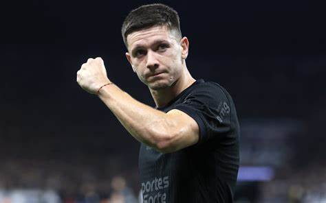
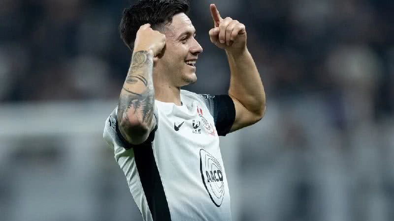

Fundação Leo Messi e Atlético de Rafaela
Rodrigo Garro estudou e formou-se em Cultural Argentino de General Pico. Seus primeiros passos no futebol foram na Fundação Leo Messi, entidade que ajuda crianças carentes em diferentes frentes, inclusive por meio do esporte. Em 2014 foi para as divisões de base do Atlético de Rafaela, onde ficou até 2017.
Instituto de Córdoba
Ainda em 2017, chegou nas categorias de base do Instituto de Córdoba, sendo promovido para a equipe principal em 2018. Estreou pelo Instituto em 3 de fevereiro de 2018, e pelo La Gloria disputou um total de 60 partidas, marcou sete gols e deu quatro assistências.
Talleres
Em 21 de janeiro de 2022, foi contratado pelo Talleres com contrato até 2025. Foi adquirido 60% do atleta por 350 mil dólares. Realizou sua estreia com a camisa do Talleres no dia 22 de janeiro, na vitória por 1–0 contra o San Lorenzo. Garro marcou seu primeiro gol pelo clube de córdoba no dia 7 de fevereiro, num empate por 1–1 contra o Belgrano, no Estádio Mario Alberto Kempes, pela Copa Córdoba. O jogador destacou-se durante o Campeonato Argentino, chamando a atenção de vários clubes.=
Corinthians
2024 Garro foi anunciado pelo Corinthians no dia 2 de janeiro, assinando contrato até 2027.O clube paulista adquiriu 80% do atleta por um valor em torno de 6 milhões de dólares (R$ 29 milhões). O acordo também previa a disputa de dois amistosos entre Corinthians e Talleres. No dia 6 de fevereiro, após um longo tempo de espera, devido a problemas de pagamento e burocráticos com o Talleres, com o Corinthians e o próprio atleta recorrendo a FIFA pela liberação, o jogador enfim teve seu nome registrado no BID e ficou apto para jogar pelo Timão. No mesmo dia, foi apresentado oficialmente no CT Joaquim Grava. Fez a sua estreia com a camisa do Corinthians em 7 de fevereiro, na derrota por 1–0 contra o Santos, na Vila Belmiro, pelo Campeonato Paulista. O meia marcou seu primeiro gol pelo clube paulista no dia 18 de fevereiro, no empate por 2–2 contra o Palmeiras, na Arena Barueri, pelo Campeonato Paulista
A partir do dia 13 de março, passou a utilizar a camisa 10 após a saída do paraguaio Matías Rojas. Devido a tentativa de outros clubes de tirar Garro do Corinthians, o meio-campista teve o seu contrato renovado no dia 24 de agosto, aumentando seu salário e estendendo o vínculo até 2028. O atleta, que vivia bom momento no Timão, se destacou no time e caiu nas graças da torcida. Em 30 de novembro, Garro se tornou o líder de assistências no Campeonato Brasileiro 2024 ao alcançar sua décima assistência na goleada por 4–2 contra o Criciúma. Em 8 de dezembro, no final da temporada, na vitória por 3–0 contra o Grêmio, ganhou o prêmio de Melhor Meia do Campeonato Brasileiro. Também levou o prêmio de “Craque da Galera”, que é determinado através de votação popular. No fim de 2024, Rodrigo Garro encerrou sua primeira temporada pelo Corinthians com 13 gols e 14 assistências.
2025 Em janeiro, Garro iniciou o ano tratando uma lesão no joelho direito. O clube confirmou que o atleta tem uma tendinopatia patelar desde a temporada passada. Em 8 de fevereiro, o Corinthians anunciou a mudança de numeração do atleta, agora vestindo a camisa 8. Isso aconteceu porque a camisa 10 foi passada para Memphis Depay, após cumprimento de uma cláusula em contrato que garantia a camisa para o neerlandês.Em 27 de março, sagrou-se campeão do Campeonato Paulista 2025 após o empate contra o Palmeiras por 0x0,porém o jogo de ida o Corinthians venceu por 1-0. Após a final do Paulistão, o jogador foi afastado para tratar uma tendinopatia patelar do joelho direito. O meia viajou para a Espanha para realizar um "procedimento inovador" e ficará fora dos gramados por tempo indeterminado. Após um semana em Madrid, Garro retornou ao Brasil depois de tratar as dores no joelho com o fisioterapeuta Javier Ledesma, especialista em recuperar jogadores lesionados.
Vida pessoal Acidente na Argentina
Na madrugada de 4 de Janeiro, dia do aniversário de Garro, o jogador se envolveu em um acidente entre moto e carro em General Pico, na Argentina, que matou um motociclista chamado Nicolás Chiaraviglio, de 30 anos. O teste de bafômetro, deu positivo, com um resultado de 0,5 gramas de álcool por litro de sangue, quantidade abaixo do estabelecido como mínimo (1g) pela legislação da Argentina. O atleta foi indiciado por homicídio culposo. Ele conseguiu ser liberado e voltou a treinar pelo Corinthians no dia 7 de Janeiro. O julgamento ainda será marcado, e caso a Justiça argentina considere Rodrigo Garro culpado, o meia do Corinthians poderia ser condenado a uma pena de três a seis anos de prisão. No dia 9 de janeiro, foi revelado que o exame toxicológico de Nicolas Chiaraviglio deu positivo para cocaína e maconha, além de um alto nível de álcool no sangue, 1,56 grama por litro. A vítima também estava com a habilitação vencida desde setembro de 2022. O meio-campista aguarda o andamento da investigação para, se necessário, prestar novos esclarecimentos à Justiça de seu país.
wikipedia Rodrigo_Garro   >